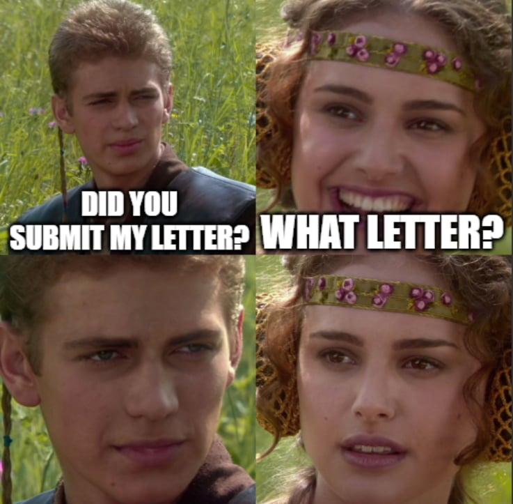

By reading this section, you will be able to answer the following questions:
- I thought I can’t control what my recommenders write in the letter. Why would I care?
- How can I “help” my recommenders to write good letters?
This is the part that you have the least control, yet the most important part in your application. I did not apply with a publication, so what my professors told the committee about me as a student and researcher contributes significantly to success. Ask for recommendations early, since it gives professors time to write you a good letter. I asked for my professors’ letter in June 2025, but all of them assumed I would need their letters in my 2nd year of undergraduate! (If you (my professors) are reading this blog, thank you, I love you!)
Even though your professors write the letters, and you will usually waive the rights to read them (to protect professors’ privacy and confidentiality), you can have a voice. Specifically, I never ask a professor to write a letter for me without having:
- A document package to re-introduce myself. It helped.
- A brief meeting with the professor to discuss the detailed submission.
REQUEST FOR RECOMMENDATION
Basic Information
- Student Name:
- Major:
- Course taken with you: I took multiple courses with some professors in 3 years, so I specifically highlight what version of me I want them to focus on in their letters.
- Research project supervised by you:
- I am requesting a letter: to include in my PhD Application in the US and Master’s Application in Europe
- I need this letter by: 11/20/2025 I also request to meet with you in the week 11/17 - 11/21 to submit the recommendation.
School List
Include the school list as a checklist, and a brief reason why you wanted to apply for the programs (research groups? Professors? interests?)
Recommendation Request
Even though there is no specific request from all the schools I’m applying to, they might ask you some questions in the request form sent to you. Since this form can only be viewed by you, I don’t know what they are specifically asking. However, there will be no unexpected questions (for example, how my performance was in Physics Lab etc.) General questions to consider:
- Motivated and Hard-working: "From your perspective, how would you characterize the student's level of motivation and work ethic in both coursework and/or research endeavors (if applicable)?"
- Intellectual/ Scholarly Ability: "Can you comment on the student's intellectual capabilities and how well they engage with scholarly material both in and outside of the classroom?"
- Emotionally Stable and Mature: "From your interactions with the student, how would you assess their emotional stability and maturity in handling academic challenges and collaborative efforts?"
- Verbal Skills: "How would you evaluate the student's verbal communication skills, particularly in presenting ideas, participating in discussions, and conveying complex concepts?"
- Research Experiences: "Could you provide insights into the student's performance and contributions during their research experiences under your guidance?"
- Research Skills: "In your opinion, what specific research skills has the student demonstrated proficiency in during their time working on projects or studies?"
- Creativity and Originality: "In your experience, have you observed instances where the student demonstrated creativity or original thinking, especially in the context of academic projects or research work?"
Resume
Attached your resume.
Personal Statement
Attached a written statement, even though it is your draft.
Waiver
I waive my right to read the letter of recommendation. When I fill out the application, you will receive an email from the program to upload the letter. I will give you very clear instructions on this.
Yes, professors’ recommendations are written by them, but it does not mean you shouldn’t discuss them prior to the application. Why? Your professor knows you, but it might not be the part you thought they would be.
